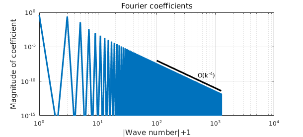

LW = 'linewidth'; lw = 1.6; MS = 'MarkerSize'; ms = 10;
The Fourier series of a function $u \in L^{2}[-\pi,\pi]$ is given as
$$ \mathcal{F}[u] = \sum_{k=-\infty}^{\infty} c_k e^{ikx} $$
where
$$ c_k = \frac{1}{2\pi} \int_{-\pi}^{\pi} f(x)e^{-ikx} dx. $$
Alternatively, we can express the series in terms of sines and cosines:
$$ \mathcal{F}[u] = \sum_{k=0}^{\infty} a_k \cos(k x) + \sum_{k=1}^{\infty} b_k \sin(k x) $$
where
$$ a_k = \frac{1}{\pi} \int_{-\pi}^{\pi} f(x)\cos(kx) dx, \quad b_k = \frac{1}{\pi} \int_{-\pi}^{\pi} f(x)\sin(kx) dx, $$
for $k>0$ and
$$ a_0 = \frac{1}{2\pi} \int_{-\pi}^{\pi} f(x) dx. $$
Similar expressions hold for more general intervals $[a,b]$ by shifting and scaling appropriately.
The Fourier coefficients for many functions $u$ can be computed in Chebfun using the trigcoeffs command. The smoothness of $u$ over $[-\pi,\pi]$ dictates the technique for determining the coefficients.
Smooth periodic functions
Typically, if $u$ and its periodic extension are twice continuously differentiable over $[-\pi,\pi]$ and $u'''(x)$ is piecewise continuous on $[-\pi,\pi]$ (or more specifically of bounded variation) then the Fourier coefficients of $u$ can be quickly computed by first constructing $u$ with the 'trig' flag in the Chebfun, then calling trigcoeffs. Here is an example for a simple Fourier polynomial:
u = chebfun(@(x) 1 - 4*cos(x) + 6*sin(2*x),[-pi,pi],'trig');
c = trigcoeffs(u);
disp('Fourier coeffs of 1 + cos(x) + sin(2*x):')
c
Fourier coeffs of 1 + cos(x) + sin(2*x): c = 0.000000000000000 + 3.000000000000001i -2.000000000000000 - 0.000000000000000i 1.000000000000000 + 0.000000000000000i -2.000000000000000 + 0.000000000000000i 0.000000000000000 - 3.000000000000001i
Note that trigcoeffs follows the MATLAB convention of having the coefficients appear in order from highest degree to lowest degree. In the code above we have reversed this order to match the way the coefficients appear in the definitions above.
Also note that trigcoeffs by default returns the coefficients in complex exponential form, i.e., the value of $c_k$ above. The equivalent coefficients in terms of cosines and sines can be obtained as:
[a,b] = trigcoeffs(u);
disp('Fourier cosine coeffs of 1 + cos(x) + sin(2*x)')
a
disp('Fourier sine coeffs of 1 + cos(x) + sin(2*x)')
b
Fourier cosine coeffs of 1 + cos(x) + sin(2*x) a = 1.000000000000000 -4.000000000000000 0.000000000000000 Fourier sine coeffs of 1 + cos(x) + sin(2*x) b = -0.000000000000000 6.000000000000002
Note that a contains the constant term in the series as its first coefficient followed by the coefficients for $\cos(x)$ and $\cos(2x)$, while b starts with the coefficient for $\sin(x)$ followed by the coefficient for $\sin(2x)$.
The default behavior of trigcoeffs is to return all the Fourier coefficients necessary to resolve the function to machine precision (assuming this number is less than 65537). However, a specific number can be obtained with an additional input argument. We illustrate this feature on the function $f(x) = 3/(5 - 4\cos(x))$, which is analytic in a strip in the complex plane and has exact Fourier coefficients given by $c_k = 2^{-|k|}$:
numCoeffs = 11;
u = chebfun(@(x) 3./(5 - 4*cos(x)),[-pi,pi],'trig');
c = trigcoeffs(u,numCoeffs);
disp('Fourier coeffs of 3/(5-4cos(x)):')
c
Fourier coeffs of 3/(5-4cos(x)): c = 0.031250000000000 - 0.000000000000000i 0.062500000000000 + 0.000000000000000i 0.125000000000000 - 0.000000000000000i 0.250000000000000 + 0.000000000000000i 0.500000000000000 - 0.000000000000000i 1.000000000000000 + 0.000000000000000i 0.500000000000000 + 0.000000000000000i 0.250000000000000 - 0.000000000000000i 0.125000000000000 + 0.000000000000000i 0.062500000000000 - 0.000000000000000i 0.031250000000000 + 0.000000000000000i
We see that the computed results match the exact results to machine precision.
Here is an example for a less smooth function:
numCoeffs = 17;
u = chebfun(@(x) abs(sin(x)).^3,[-pi,pi],'trig');
c = trigcoeffs(u,numCoeffs); c = c(end:-1:1);
disp('Fourier coeffs of |sin(x)|^3')
c
Fourier coeffs of |sin(x)|^3 c = 0.001102371900205 - 0.000000000000000i 0.000000000000000 + 0.000000000000000i 0.004042030300748 - 0.000000000000000i -0.000000000000000 - 0.000000000000000i 0.036378272706721 - 0.000000000000000i 0.000000000000000 - 0.000000000000000i -0.254647908947031 - 0.000000000000000i -0.000000000000000 + 0.000000000000000i 0.424413181578389 + 0.000000000000000i -0.000000000000000 - 0.000000000000000i -0.254647908947031 + 0.000000000000000i 0.000000000000000 + 0.000000000000000i 0.036378272706721 + 0.000000000000000i -0.000000000000000 + 0.000000000000000i 0.004042030300748 + 0.000000000000000i 0.000000000000000 - 0.000000000000000i 0.001102371900205 + 0.000000000000000i
We see that the coefficients decay much more slowly in this case in fact the number of terms required to resolve this function to machine precision is:
length(u)
ans =
2513
The reason is that this function has only two continuous derivatives in $L^{2}[-\pi,\pi]$ and a piecewise continuous third derivative, so its Fourier coefficients decay as $O(|k|^{-4})$ [1]. This decay rate can be seen by plotting the Fourier coefficients on a log-log scale, which can be easily done for the positive mode coefficients (i.e. $k>0$) using the plotcoeffs command:
plotcoeffs(u,'loglog'), ylim([1e-15 1]), hold on
k = [100 length(u)/2];
plot(k,10*k.^(-4),'k-',LW,lw)
text(500,50*(500)^(-4),'O(k^{-4})','FontSize',12)
hold off

Non-smooth functions
The Fourier coefficients of functions (and their periodic extensions) with fewer than two continuous derivatives can also be computed. However, the functions must first be constructed using the default, 'non-periodic', option. In this case the Fourier coefficients are computed using the integral formulas (via Chebfun's sum method) instead of the Fast Fourier Transform.
The quintessential example of a non-smooth function is that of the square wave (or periodic extension of the step function), which can be defined by the sign function as
$$ u(x) = \mbox{sign}(\sin(x)) $$
This can be constructed in Chebfun with 'splitting' turned on,
sq_wave = @(x) sign(sin((x))); u = chebfun(sq_wave,[-pi,pi],'splitting','on');
We can obtain the Fourier coefficients of this function using again the trigcoeffs method. Since the square wave is odd, it makes sense to look at the Fourier sine coefficients in this case:
numCoeffs = 15;
[a,b] = trigcoeffs(u,numCoeffs);
disp('Fourier sine coeffs of unit step function:')
b
Fourier sine coeffs of unit step function: b = 1.273239544735163 - 0.000000000000000i -0.000000000000000 - 0.000000000000000i 0.424413181578388 - 0.000000000000000i 0.000000000000000 - 0.000000000000000i 0.254647908947033 + 0.000000000000000i 0.000000000000000 - 0.000000000000000i 0.181891363533594 - 0.000000000000000i
The exact values of the coefficients are
$$ b_k = \frac{4}{k\pi} ~~(k \mbox{ odd}) $$
with $b_k = 0$ for $k$ even, $k\ge 1$. These values can be easily seen in the computed results:
disp(' k pi/4*b_k')
disp([(1:7)' pi/4*real(b)])
k pi/4*b_k 1.000000000000000 1.000000000000000 2.000000000000000 -0.000000000000000 3.000000000000000 0.333333333333333 4.000000000000000 0.000000000000000 5.000000000000000 0.200000000000000 6.000000000000000 0.000000000000000 7.000000000000000 0.142857142857142
The computed cosine coefficients are numerically zero, as expected:
norm(a,inf)
ans =
1.017844372940613e-16
Truncated Fourier approximations
The trigcoeffs function can also be used in combination with the Chebfun constructor to generate truncated Fourier series representations of functions. Here's an example for the above square wave using 15 Fourier modes:
numModes = 15; c = trigcoeffs(u,2*numModes+1); u_trunc = chebfun(c,[-pi,pi],'trig','coeffs'); plot(u,'k-',u_trunc,'b-',LW,lw)
This represents the best 15-mode trigonometric approximation to the square wave over $[-\pi,\pi]$ in the $L^2$ sense. The oscillations in the approximation are called the Gibbs phenomenon.
To see the actual 'wave' it is useful to plot the approximation over a larger interval, which can be done for $-4\pi \leq x \leq 4\pi$ as follows:
u = chebfun(sq_wave,[-4*pi,4*pi],'splitting','on'); u_trunc = chebfun(u_trunc,[-4*pi,4*pi],'trig'); plot(u,'k-',u_trunc,'b-',LW,lw)
Note that in this case we don't recompute the Fourier coefficients over the larger domain, we simply construct u_trunc over the larger domain.
Here is one last example for the sawtooth wave, again computed over $[-\pi,\pi]$ then expanded to a larger domain:
sawtooth = @(x) (mod(x+pi,2*pi))/(2*pi); u = chebfun(sawtooth,[-pi,pi],'splitting','on'); c = trigcoeffs(u,2*numModes+1); u_trunc = chebfun(c,[-pi,pi],'trig','coeffs'); u = chebfun(sawtooth,[-4*pi,4*pi],'splitting','on'); u_trunc = chebfun(u_trunc,[-4*pi,4*pi],'trig'); plot(u,'k-',u_trunc,'b-',LW,lw)

To hear this wave using try chebtune(u_trunc,6).
References
[1] L.N. Trefethen, Spectral Methods in MATLAB, SIAM, 2000.